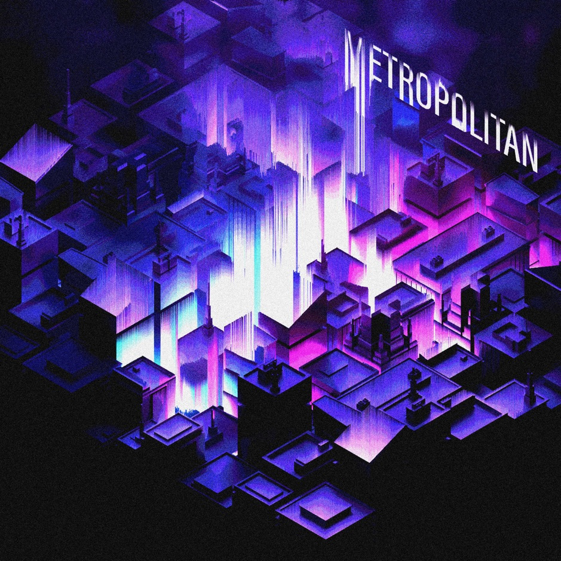
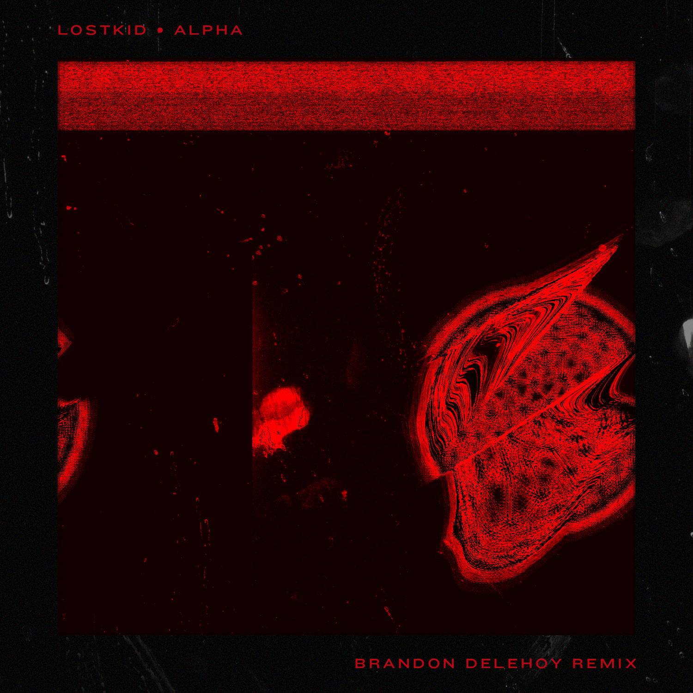
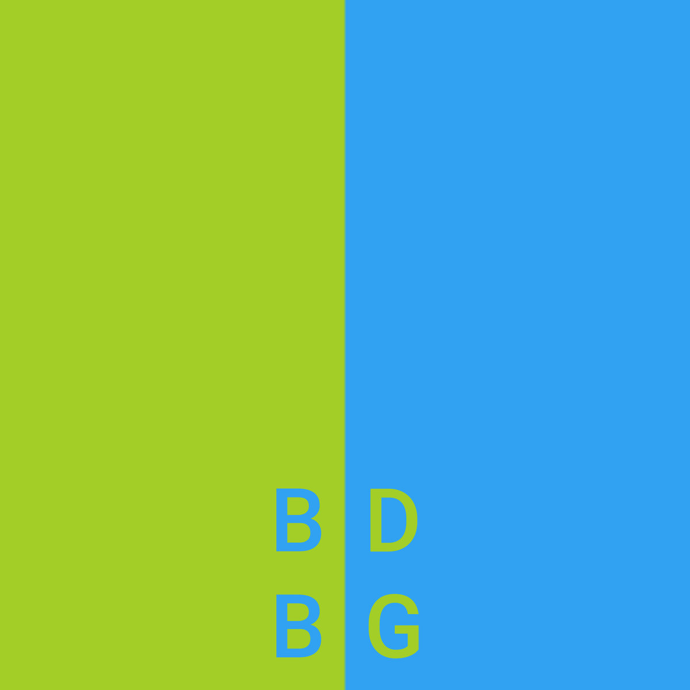
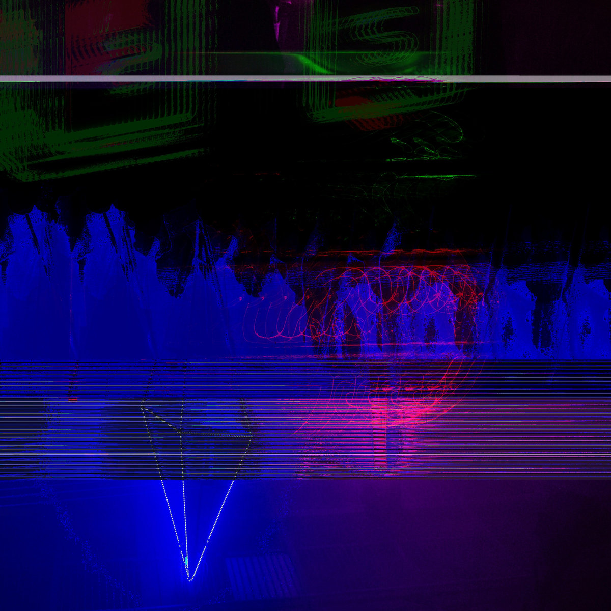

Music
Metropolitan
December 13, 2019
My debut album. A personal story told through the perspective of a trip through a city.
Artwork by Jesus Equihua.
NΣΣT - Kokoro (Brandon Delehoy Remix)
September 29, 2019
VGDC Collection (2015-2019)
May 13, 2019

lostkid - Alpha (Brandon Delehoy Remix)
March 24, 2019
Listen to the original from lostkid's The Machine EP here.
"Red Cover" (above) by the always excellent om_neb.

Blue / Green EP
October 26, 2018
